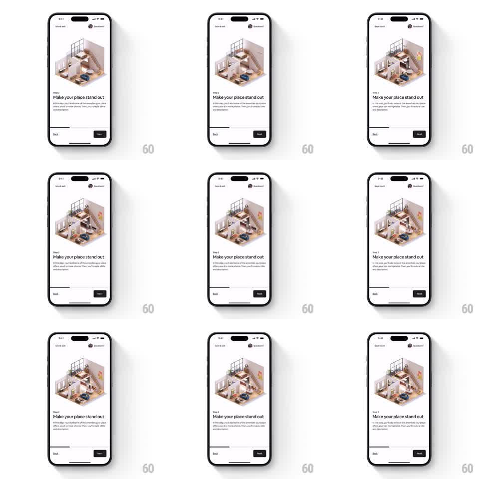

Media
Frame-by-frame

Rebuild this animation 1:1: Airbnb host onboarding step 2 ("Make your place stand out") - a looping isometric 3D cutaway of a furnished home where small idle motions run continuously: the ceiling fan spins, plants sway, sunlight patches drift.

Rebuild this animation 1:1: Airbnb host onboarding step 2 ("Make your place stand out") - a looping isometric 3D cutaway of a furnished home where small idle motions run continuously: the ceiling fan spins, plants sway, sunlight patches drift.
## Integration
Integration: stack-agnostic spec - springs given as stiffness/damping, timed motions as duration + curve; map every value to your framework and animation library of choice.
## Scene
Onboarding screen: isometric dollhouse cutaway (two floors, stairs, furniture, plants, ceiling fan) rendered soft and warm, floating over white. Step label "Step 2", headline, body copy, Back / Next footer with a progress bar.
## Motion spec
Pattern: looping idle micro-motions inside a still illustration.
- Ceiling fan: continuous rotation (~2s per revolution, linear, no easing).
- Plants: gentle sway (rotate +-2deg, ~3s ease-in-out, alternating phase per plant).
- Ambient: a soft light/shadow drift across the floor (~6s cycle, opacity 0.1 -> 0.2).
- Illustration holds position - no parallax, no camera move. Loop is seamless and indefinite.
## Calibration
- Motions are ambient, not attention-seeking: small amplitudes, slow periods, nothing syncs with anything else.
- The cutaway stays perfectly still; only interior elements move.
## Reduced motion
Static illustration; all loops stop.
## Don't miss
- The fan blur reads at any speed - fake it with opacity layers if rotation is expensive.
- Stagger plant phases so the room never moves in unison.